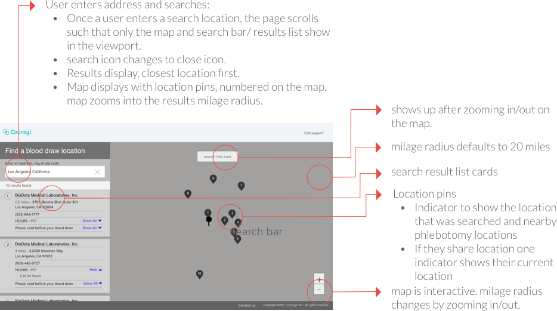
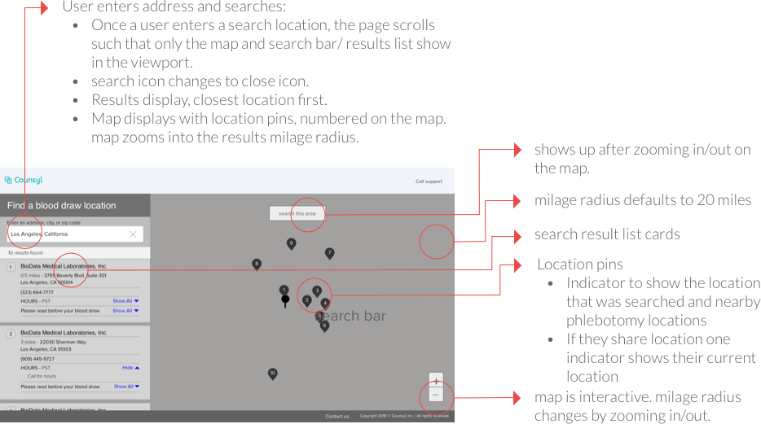
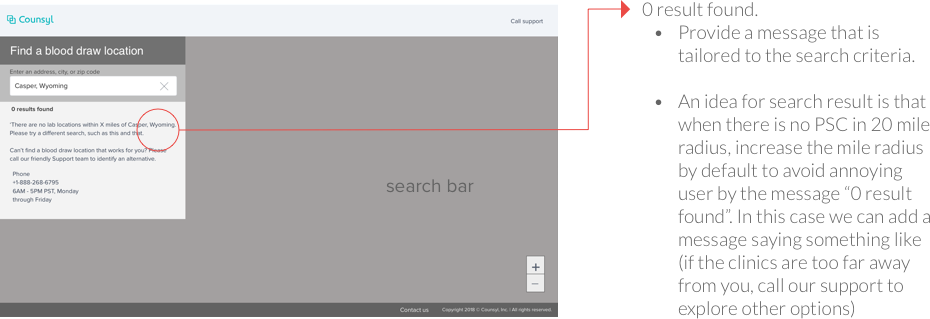
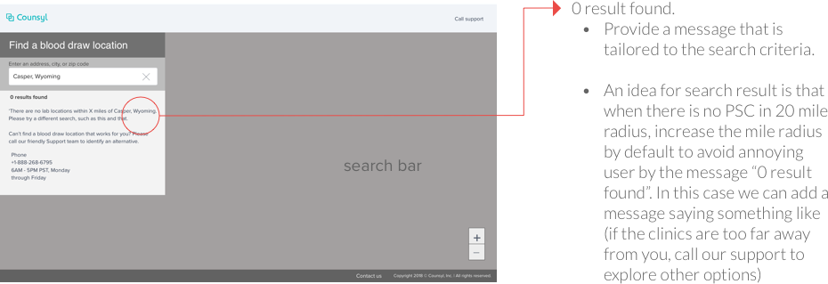

|
Name |
Natera |
Progenity |
|---|---|---|
Pros |
Prevents competitors from knowing their phleb capabilities |
The US map appears with a number of PSCs on different states, before search. Input mile radius is available. |
Cons |
Having an easily accessible phleb map is a key differentiator - putting it behind a patient portal limits traffic to existing users only |
After entering the zip code, the map doesn't zoom in and the user should know to scroll down to find available options. If zip code and state don't match, the tool doesn't work properly. |
 

 
